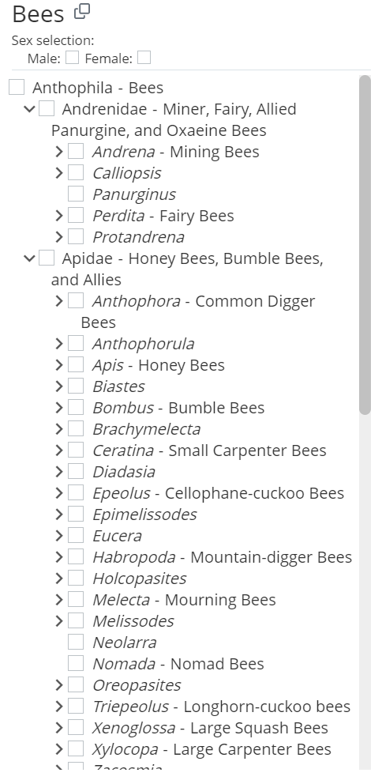
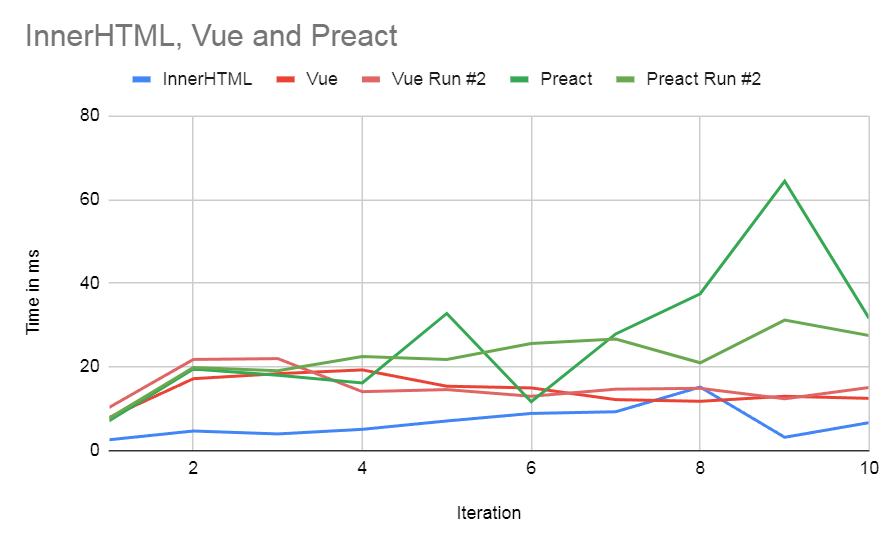

Since the Infusion 6 renderer is close to being a reality, it is time to understand the characteristics of some of the various DOM reconciliation algorithms out there.
Could we do without a virtual DOM entirely?
To start with is the question of whether we even really want one at all — the classic Svelte Virtual DOM is pure overhead post has been though its various hype cycles but 7 years later the majority of frameworks out there still have one so the consequences are clearly not as clear-cut as the argument would have it.
On the one hand, after digging in a bit, I consider that Svelte for all its power and efficiency is not a model that we want to follow. Svelte’s issue 4971 reports that it has no model for taking control of rendering in a framework-sympathetic way — “render functions” are not implemented and never will be. The issue was curtly closed with the note “The concept of render functions is anti-Svelte.” In any case, the presence of an obligate compiler in Svelte’s tool chain puts it outside our scope – I’m only interested in infrastructure that can be idiomatically delivered in the browser as befits the notion of a substrate.
Central to my notion of Infusion’s role and that of an integration domain in general is that its abstractions need to be permeable. This is a system designed to support work on real projects, and as such idiomatic access should not be cut off to underlying primitives such as the DOM where these are required to address integration concerns, even if this compromises performance in some cases.
That said, during the 2021-2022 era explorations on the then “new renderer” it became apparent that given sufficient declarative insight into what DOM manipulations were encoded, we could indeed do without a virtual DOM. We see vestiges of this kind of approach in preact’s “cut-through” to allow for rendering optimization when passing a signal as the text of a DOM node (and in preact 10.x, on an attribute).
But this won’t deal with cases where apparently unrelated component templates are used to update a component in-place which in practice share a lot of node structure. The important concerns:
- Most important is to avoid losing browser state (e.g. focus, input state) on DOM nodes that are involved in an adaptation
- The performance and garbage impact of unnecessarily tearing down and replacing DOM nodes is significant and should be avoided
We are moderately concerned with performance but not to the extent seen in the Krausest JS benchmarks which test intensive cases involving thousands of DOM nodes in a flat table structure which are unrealistic for a typical user interface, let alone that exposed from a substrate.
Benchmarks for Preact vs Vue vs InnerHTML
A further issue with Svelte’s lack of support for arbitrary render functions is that this makes it hard to test the framework’s rendering strategies on a level playing field with that of other frameworks without involving a lot of other variables due to implementing a component design.
The benchmark I chose is drawn from a manipulation of the Oregon Bee Atlas Melittoflora tool by selecting the bee records recorded in June and observing the change in the DOM structure of the bee taxonomic tree shown at the bottom left of the application, when unfolded to genus level. For performance reasons and because current Infusion is not up to doing any better, this is currently rendered through string-bashing and assigning to innerHTML of the checklist pane.
The benchmark repeatedly flips between these two panes - this is about 30K of markup, alternating between 541 and 334 DOM nodes, of which it seem about 249 nodes can be reused between the views.
The results are pretty interesting. To start with, both Vue and Preact are 5x slower than the innerHTML strategy. This is of course not a valid comparison since the innerHTML strategy is unusable as a result of destroying the state of every DOM node, but this likely represents a kind of lower bound on the short-run cost of updating this amount of DOM. However, as the test runs longer and longer, interesting differences between the systems start to build up. We see that Preact’s approach, whilst implemented fairly minimally seems over time to be generating more garbage than Vue.
In fact after 8 iterations Vue has roughly pulled level with the increasing cost of the innerHTML strategy suggesting that its throwing the entire set of 541 DOM nodes on the heap on every render is starting to take a toll.
You can view the raw timings in this Google Sheet.
Conclusions
The frameworks were a little disappointing in their performance, and it has to be borne in mind that another source of inaccuracy in the benchmarks is that we neglect the costs of any component allocation internal to the frameworks should we try to use their component strategies for this rendering. Instead we simply read the DOM markup from the filesystem and convert this into the frameworks’ respective hyperscript render functions. However it was encouraging that Vue’s somewhat “mongrel” strategy did so well in the long run since this suggests that there is no single “brilliant idea” to be had in this idea, but simply a patchwork terrain of plausible rendering scenarios to be tweaked against.
I spent a fair while trying to reuse primitives from within Vue’s rendering pipeline for Infusion but found that they were too entangled with other aspects of its component system that we don’t want to support. In addition it always renders asynchronously once a batch of component updates have fully resolved which is going to be an awkward workflow to track.
In practice I’ve ended up with an extremely simplistic “good enough for now” strategy which doesn’t even bother to keep the old copy of the virtual DOM around and simply diffs the current tree against the real DOM. This was based on a misunderstanding of a description of Mithril’s diffing algorithm when when I look at it closely is actually just like all the others and diffs two virtual DOMs with each other.
In developing this I cribbed from two very helpful “make your own virtual DOM” articles, firstly YCM Jason’s Building a Simple Virtual DOM from Scratch and secondly Marcelo Lazaroni’s A virtual DOM in 200 lines of Javascript. Both of these are somewhat puzzlingly structured via an intermediate “patch” structure which I can’t imagine could likely be applied a 2nd time and so represents undesirable garbage – the “real world” reconciliation algorithms apply mutations as they are found.
The details are not critical here and I just need something straightforward without utterly terrible performance that I can understand at a pinch when it goes wrong. In practice even in this most demanding case less than 1% of the compute time of the Melittoflora app is actually burned in manipulating the DOM (most of the rest goes in actually filtering and binning the 100k records of bee interactions). It’s a pretty peculiar app that has an UI so complex that it spends a substantial amount of time in the 2020s updating its DOM, which makes the Krausest benchmarks so idiosyncratic and I think mostly ignored by people making technology choices.
What DOM mutations are idiomatic?
There’s something to think over regarding what kinds of DOM mutations are indeed going to be idiomatic for some class of apps. In this Reddit thread there is an interesting tussle between the author of a peculiar and short-lived rant named GACT about Virtual DOM strategies and the Svelte framework author Rich Harris. The GACT author correctly points out that using a pure virtual DOM strategy is wasteful in the case of a single leaf update, and that a virtual DOM reconciliation algorithm might be expected to be \( O(n^4) \) in the general case. However, the first observation is invalidated by the use of a signals library such as Vue or preact-signals to transmit data updates directly to leaves in the DOM. Rich responds to the second objection by remarking
You’re describing hypothetical performance improvements for situations that simply don’t obtain in the real world.
<div>[contents]</div> <--> [contents]just isn’t a category of virtual DOM change that’s worth prioritising.
What’s interesting however is that this is just the kind of DOM change that the UI gesture converting the “user view” of our substrate into its “design view” is likely to trigger. At this point one expects the plain runtime version of the UI to get hoisted into an editable one which might well involve a lot of nodes being hoisted deeper into the tree – and then being pushed back again once the edit is done. We shouldn’t get too invested in a model of reconciliation which puts this out of scope.
A final observation about what DOM updates are worth optimising for is suggested by a look at the core of Mithril’s diff algorithm – this is bulky and includes a 120-line function implementing an LCS algorithm which in turn has been lifted from the ivi “declarative Web UI library”. I view this as founded on a kind of “pun” – because this algorithm is named “diff” it seems attractive to base it on the classic algorithm underlying the UNIX utility of that name designed to patch update to large linear text files. My feeling is that this kind of update is pretty unidiomatic in the DOM — a long expanse of nodes sharing a common parent in which just a few of them have been edited or rearranged — and it certainly doesn’t match my actual case nor the ones I see upcoming. And to put things in perspective, Mithril’s diff implementation in this small framework is larger than preact’s entire framework. That said, I find preact’s intensive focus on bundle size at the expense of virtually every other consideration is unbalanced – for example, see this thread on the disergonomics of preact’s single-character mangled names that everyone debugging or adapting their framework needs to tangle with. But on the other hand the amount of effort frameworks like Mithril and ivi focus on a probably uncommon case, likely because a popular and well-understood algorithm is available for it, also feels unbalanced.